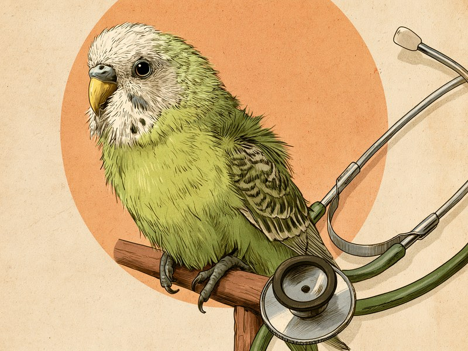

インコや文鳥は、体が小さいうえに、具合が悪くてもそれを隠そうとする習性があります。だからこそ「羽を膨らませていないか」「便の色はいつも通りか」「食べ方や呼吸の音に変わりはないか」という毎日の小さな観察が、体調不良に早めに気づくいちばんの手がかりになります。 A budgie or a Java sparrow is tiny, and on top of that, birds tend to hide it when they feel unwell. That is why a few simple daily checks - fluffed-up feathers, the colour of the droppings, how it eats and how it breathes - are the best way to catch trouble early.
体調不良のサイン:膨らんだ羽、便の色、食欲、羽づくろい
鳥の体調不良で、まず覚えておきたいのが「膨羽(ぼうう)」です。羽を膨らませてまん丸になった姿は、一見するとふわふわして可愛らしいのですが、これは寒いときや体調が悪いときに見られるサイン。具合が悪いと全身の羽が膨らみ、止まり木からケージの床に降りてしまうことも多くなります。
寒さで一時的に膨らんでいるだけなら、部屋を温めれば元に戻ります。温めても膨らんだままだったり、床に降りたままじっとしていたりする場合は、体調不良のサインとして受け止めてください。ケージの温度の目安や保温の道具については、飼育アイテムガイドで紹介しています。
次に、便です。鳥の便は毎日目にするものだけに、いちばん気づきやすい健康のバロメーターでもあります。いつもと違って黒っぽい便、赤っぽい便、黄色っぽい便に変わっていたら、体の中で何かが起きているサインかもしれません。ケージの敷き紙を替えるときに、便の色をひと目見る習慣をつけておくと変化に気づきやすくなります。
そのほか、食欲がない、羽づくろいがいつもより明らかに多い、といった変化も体調不良のサインになりえます。どれも「たまたまかな」と思ってしまいそうな小さな変化ですが、次の項で説明する鳥の習性を知ると、その小さな変化を軽く見られない理由が分かります。
鳥は弱った姿を隠す:ささいな変化の時点で受診したい理由
鳥には、弱った姿を隠そうとする習性があります。これは鳥専門の動物病院やエキゾチックアニマルを診る複数の動物病院が、それぞれ独立して同じ趣旨の説明をしている、鳥の基本的な性質です。
野生では、弱った個体は捕食者に狙われやすいため、具合が悪くても元気なふりをするようになった、と言われています。理由はどうあれ、飼い主の目の前にいる鳥も、この習性を持ったまま暮らしているというのが大事なところです。
つまり、飼い主が「明らかに具合が悪そうだ」と気づいたときには、鳥はもう隠しきれないほど弱っている可能性がある、ということ。鳥専門の動物病院は、いつもより食べ方が少ない、呼吸音が荒いなど、ささいな変化を感じた時点で早期の診察を受けるよう呼びかけています。
「様子を見てから」ではなく「気になった時点で」が、鳥の受診の合言葉です。前の項で挙げた膨羽や便の色の変化も、この習性を踏まえると、見逃してはいけないサインだと分かります。
出典: バードプロ 鳥類専門動物病院(池袋、弱った姿を隠す習性とささいな変化での早期受診を明記) birdpro.co.jp / ダイゴペットクリニック(愛知県) info-dpc.net / すみか動物病院(埼玉県) sumika-ah.com / とくしま鳥の病院(徳島) tokushimabirdclinic.com
そのう炎:頻繁なあくび、口のにおい、嘔吐が初期のサイン
「そのう」は、鳥の首のつけ根あたりにある、食べたものを一時的にためておく袋のような器官です。ここに細菌・真菌(カビ)・原虫が感染して炎症を起こすのが「そのう炎」で、鳥がかかりやすい病気のひとつとして知られています。
初期のサインは、頻繁にあくびをする、口から嫌なにおいがする、吐く、といったもの。鳥のあくびは健康なときにも見られますが、やたらと回数が多い場合は、そのうに違和感があってあくびのような動きを繰り返しているのかもしれません。顔を近づけたときに口のにおいが気になったら、それもサインのひとつです。
そのう炎は、放置すると重篤化するため、早期の受診が大切です。「あくびが多いだけ」と見過ごさず、においや嘔吐とあわせて気になる様子があれば、動物病院で診てもらってください。
出典: SBIプリズム少短(鳥のそのう炎) sbiprism.co.jp
メガバクテリア症:セキセイインコに多く、直前まで元気でも急に発症する
メガバクテリア症は、セキセイインコに多いとされる病気です。初期のサインは、吐く・吐き出す、黒っぽい便や未消化の粒がそのまま出てくる便、食欲の低下、体重の減少など。前の項で「便の色の変化」を挙げたのは、この病気のように便に現れる病気があるからです。
やっかいなのは、無症状のまま経過することもある、という点です。そして、直前まで元気に見えていても、急に発症して重症化することがあります。「昨日まで普通だったのに」という事態が起こりうる病気だと知っておいてください。
治療は抗真菌薬によるものが基本で、早期であれば数週間で完治しうるとされています。つまり、早く見つけられるかどうかで見通しが大きく変わる病気です。セキセイインコと暮らしているなら、とくに便の状態と体重の変化に目を配っておきましょう。
出典: よしだ動物病院(鳥のメガバクテリア症) yoshida-ah.jp
卵詰まりとPBFD:メスの急な不調と、若い鳥の羽毛の異常
メスの鳥で知っておきたいのが「卵詰まり」です。産むはずの卵がうまく出てこられずに体の中にとどまってしまう状態で、初期のサインは、ぐったりして苦しそうにしている、体力を消耗している、便秘といった様子です。
一羽で飼っていても、メスは卵を産むことがあります。「うちはオスと一緒じゃないから関係ない」とは考えず、メスがぐったりして苦しそうなときは、卵詰まりの可能性を頭に置いてください。放置すると命に関わるため、急いで動物病院へ相談することが大切です。
出典: ちゅら動物病院(文鳥の卵詰まり) chura.life
もうひとつ、若い鳥で注意したいのが「PBFD(オウム類嘴羽毛病)」です。サーコウイルス科のウイルスによる感染症で、3歳頃までの若い鳥がかかりやすいとされています。
症状の出方には二つのタイプがあります。急性型では、食欲不振・下痢・羽毛の異常が現れます。慢性型では、羽毛が折れる、羽軸がよじれるといった羽の異常が、換羽(羽の生え替わり)のたびに進行していきます。「生え替わるたびに羽の様子がおかしくなっていく」と感じたら、この病気を疑うきっかけになります。
感染した鳥の排泄物・分泌物・羽毛から、口を通して、あるいは空気を通して広がるウイルスなので、複数の鳥を飼っている場合はとくに注意が必要です。新しく鳥を迎えるときには、若い鳥ほどこの病気のリスクを知っておくと安心です。
出典: アニコム損保 どうぶつ病気大百科(PBFD) anicom-sompo.co.jp
定期健診(バードドック):鳥だからこそ「元気なうちに診てもらう」
ここまで読むと、「鳥は隠すし、急に発症するし、飼い主が気づくのは難しいのでは」と感じるかもしれません。その通りで、だからこそ大切になるのが定期健診です。鳥類は、犬や猫と比べて予防医学の研究が遅れているとされていて、元気なうちに定期健診(バードドック)を受けて早期発見につなげることが、とくに重要だと鳥を診る動物病院が説明しています。
どのくらいの頻度で受ければいいかは、病院によって「年1〜2回」から「年2〜4回」まで幅があり、統一された基準はありません。目安としては、年1回以上、できれば複数回、と考えておくとよいでしょう。迎えたばかりのときや、年齢を重ねてきたときは、かかりつけの病院に頻度を相談してみてください。
病院選びも大切です。鳥はすべての動物病院で診てもらえるわけではないので、「エキゾチックアニマル」や「鳥専門」を掲げている動物病院を選ぶのが望ましいとされています。鳥を診てくれる病院が近くにあるかどうかは、体調を崩してから探すのではなく、元気なうちに調べておくと安心です。
出典: バードプロ 鳥類専門動物病院 birdpro.co.jp / ダイゴペットクリニック info-dpc.net / すみか動物病院 sumika-ah.com / とくしま鳥の病院 tokushimabirdclinic.com
- 温めても羽を膨らませたまま(膨羽)、止まり木から床に降りてじっとしている
- 便が黒色・赤色・黄色に変わった、未消化の粒がそのまま出てくる
- いつもより食べ方が少ない、食欲がない、体重が減ってきた
- 呼吸音が荒い
- 頻繁にあくびをする、口から嫌なにおいがする、吐く(そのう炎の可能性)
- メスがぐったりして苦しそう、便秘をしている(卵詰まりの可能性。命に関わるため急いで受診)
- 換羽のたびに羽毛が折れる・羽軸がよじれるなど、羽の異常が進行している(PBFDの可能性)
- 羽づくろいがいつもより明らかに多い
鳥の健康観察は、「羽は膨らんでいないか」「便の色はいつも通りか」「食べ方と呼吸の音に変わりはないか」の三つに絞るとぐっと続けやすくなります。毎朝の敷き紙の交換とごはんの時間のついでにこの三つを確かめる習慣があれば、弱った姿を隠す鳥の小さな変化にも気づける確率が上がります。膨羽の背景にある温度管理の道具は、インコ・文鳥の飼育アイテムガイドもあわせてどうぞ。
ミニクイズ:昨日まで元気に食べていた鳥なら、今日の便が黒っぽくても数日は様子を見てよい?(タップして答えを見る)
こたえ×。鳥には弱った姿を隠そうとする習性があるため、飼い主が気づいたときには思ったより弱っていることがあります。黒色便はメガバクテリア症などの初期サインにもなりうるもので、この病気は直前まで元気でも急に発症して重症化することがあります。鳥専門の動物病院は、ささいな変化を感じた時点での早期受診を呼びかけています。